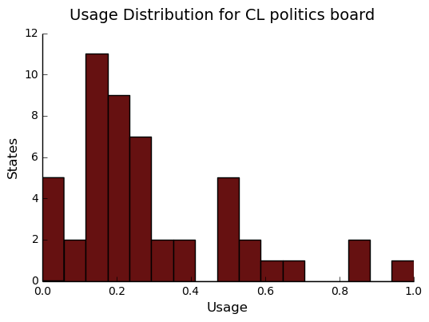
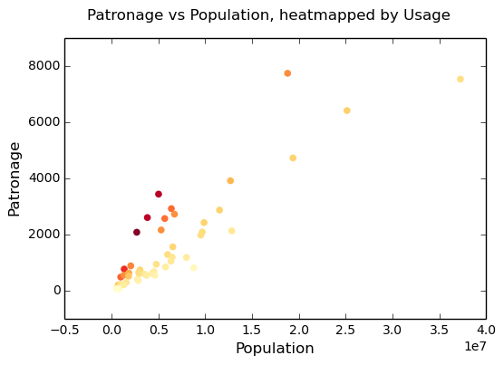

Scraping the Bottom of the Barrel
1 Introduction
For my web scraping project, I've chosen to extract some of the politics data from craigslist.org. My original ambition, though it proved difficult to affirm, was to prove a small, non-existant, or negative correllation of pro-trump chatter to expected conservatism. That is, I suspected that, somewhat counter-intuitively, the politics sections of more conservative states would a disproportionately less likely source of pro-trump posts. My basis for this suspicion was my general observation that less regulated areas for discussion on the internet tend to be very attractive to those members of a publically socially disparaged minority. Recognizing that, among other clues, Trump supporters in largely pro-Clinton geographic areas are disparaged for their support in amounts disproportionate to their surprisingly high representation, it followed that I could expect a surprising amount of pro-Trump (mostly trollish) chatter in mostly liberal places (e.g., New York City). The positive sentiment aspect of that hypothesis proved to be difficult to convincingly affirm. More generally, also I sought to analyze the trends of politcs discussion of craiglist, mostly in the area of text usage (capitalization, word frequency, etc) vs political leaning.

2 Methodology
To extract data from craigslist, I used the Python Scrapy package,
which was probably overkill. Originally, I intended to collect post
bodies as well as the titles, however this would require about 100
times as many request, too many for me to reponsibly exectute in a
reasonable amount of time. I resigned to limiting myself to titles,
which involved about 500 requests, spread over 5 hours, to obtain
roughly 40,000 posts titles/times. For each of these titles, there is
a corresponding state and region, with some regions additionally
divided into subregions (the New York City region, for example,
consists of Brooklyn, Queens, Manhattan, etc). Each post, its time and
its geographical origin are represented with a single row in a 40k row
Pandas DataFrame, usa. Data corruption was not an issue, as the CL
layout is quite uniform, though I did need to take into account data
redundancy (e.g., occaisionally "regions" are also "subregions" of
sibling regions). To make use of the extracted post title data, I
employed the 2010 U.S. census, which is available from
http://www.census.gov, as well as the 2016 election results data,
which I scraped from http://uselectionatlas.org/ using a BeautifulSoup
extraction script.
3 Preparing data
3.1 Grab CL Data
Data is read from file that craigcrawler built
usa_raw = pd.read_csv("data/us.csv", index_col=0)
Data synopsis:
38,692 total posts exctracted from 416 regions over 52 state. The most popular state was Alabama, and the most popular region was, surprisingly, SF bay area.
3.1.1 usa Sample
Sample of posts in the usa DataFrame before preprocessing, which is
the DF for storing all CL politics posts:
| title | date | state | region | subregion | |
|---|---|---|---|---|---|
| 33596 | Fed. Paper No. 6 | 2016-11-28 11:02 | North Carolina | fayetteville, NC | nan |
| 26313 | Killswitch - On Netflix | 2016-12-26 03:27 | Ohio | dayton / springfield | nan |
| 30403 | Idiot who calls dems commies all day every day cannot name ONE | 2016-12-27 17:10 | Colorado | denver, CO | nan |
| 24190 | BIPOLAR CRAZY, PSYCHO KAAIHUE?? | 2016-12-13 17:08 | Hawaii | hawaii | oahu |
| 36706 | Garofalo on Unions | 2016-12-26 04:26 | Texas | tyler / east TX | nan |
3.2 U.S. Census 2010
3.3 U.S. 2016 Election
The 2016 Election results will be useful. They are grabbed from a really nice site, uselectionsatlas.org.
import requests from scrapy import Selector atlas_url = ("http://uselectionatlas.org/RESULTS/data.php?year" + "=2016&datatype=national&def=1&f=1&off=0&elect=0") atlas_source = requests.get(atlas_url).text select = Selector(text=atlas_source).xpath('//*[@id="datatable"]/tbody/tr') convert = lambda s: int(s.replace(',', '')) vote_names = map(str, select.xpath('td[3]/a/text()').extract()) # Correct name for DC vote_names[8] = "District of Columbia" clinton_votes = map(convert, select.xpath('td[17]/text()').extract()) trump_votes = map(convert, select.xpath('td[18]/text()').extract()) gen_votes = pd.DataFrame({"clinton": clinton_votes, "trump": trump_votes}, index=vote_names) # Dub a states Rebublican vote rate "trumpism" trump_favor = pd.DataFrame(gen_votes["trump"]/gen_votes.sum(axis=1), columns=["trumpism"], index=vote_names) voting = gen_votes.join(trump_favor).sort_values("trumpism", ascending=False) voting = voting.drop("District of Columbia")
Sample of voting table:
| clinton | trump | trumpism | |
|---|---|---|---|
| Wyoming | 55973 | 174419 | 0.757 |
| West Virginia | 188794 | 489371 | 0.722 |
| North Dakota | 93758 | 216794 | 0.698 |
| SPACE | ------ | ------ | ------ |
| Hawaii | 266891 | 128847 | 0.326 |
| California | 8753788 | 4483810 | 0.339 |
| Vermont | 178573 | 95369 | 0.348 |
3.4 Preprocess Data
Some preprocessing to check data for corruption and unexpected results
print "Data tests... \n\nAssertions Passed\n\n" # Confirm all expected regions and states present assert len(usa_raw["state"].unique()) == 52 # expected number of states (D.C., Territories) assert len(usa_raw["region"].unique()) == 416 # expected number of regions # Confirm that there are no posts without regions/states. Not all CL # regions have subregions, so it's okay for null subregions. assert len(usa_raw[usa_raw["state"].isnull()].index) == 0 assert len(usa_raw[usa_raw["region"].isnull()].index) == 0 # Find regions/subregions for which there are no posts postless_regions = usa_raw[usa_raw["title"].isnull()] postless_regions_times = usa_raw[usa_raw["date"].isnull()] # Not actually a good test, but good enough assert len(postless_regions) == len(postless_regions_times)
58 regions/subregions over 32 states without any posts.
Drop unneeded data.
# Drop empty regions. usa = usa_raw.dropna(subset=["title", "date"], how="any", axis=0) assert len(postless_regions) == len(usa_raw)-len(usa) # Get rid of territories (Guam, Puerto Rico). usa = usa[usa["state"] != "Territories"] # Get rid of "District of Columbia" usa = usa[usa["state"] != "District of Columbia"]
Confirm Census Data
assert set(usa.state.unique()) == set(census.index) and len(usa.state.unique() == len(census.index))
Confirm Election Data
assert set(usa.state.unique()) == set(voting.index) and len(usa.state.unique() == len(voting.index))
4 State Usage
Although the post data has attached a fairly fine-grain geographical description, I found the CL regions in general to not line up well with any census bureau categories. Moreover, even in the lucky event of such name correspondence, the division of regions was at least questionable. For example, by far the datasets most prominent "state" outliers, District of Columbia, has a census population of about 600k, yet a practical metropolitan area population in the several millions, a disparity that gross skews its contributions to state-wide statistics. Therefore, regions and subregions were largely found to be unmanageably tedious to consider seriously in any analysis. States, however, having relatively little variation between practical occupancy and census population, and have indisputable borders, barring District of Columbia, are ideal for inspection.
4.1 Terms
- Patronage Patronage is the raw number of posts on a politics board.
- Usage Usage is my measure for a states proportional interest in the politics board. It is simply the normalized ratio of patronage and state population.
- Trumpism
Trumpism is the name for a states republican vote percentage in the
general election. It is used as a rough measure of how pro-Trump
rate of a given state, and is a column in the
votingDataFrame, which is comprised of scraped data on the 2016 General Election results.
4.2 Organize Data
The state_usage table is the census table concatenated with patronage usage.
| state | patronage | population | usage |
|---|---|---|---|
| Minnesota | 999 | 5.30392e+06 | 0.437617 |
| Vermont | 18 | 625741 | 0.00141296 |
| Oregon | 1094 | 3.83107e+06 | 0.703323 |
4.2.1 states Sample
Joining state_usage with voting gives us a decent top down view of
state political tendencies on CL.
states = state_usage.join(voting, how="left").sort_values("usage")
| state | patronage | population | usage | clinton | trump | trumpism |
|---|---|---|---|---|---|---|
| North Carolina | 946 | 9.53548e+06 | 0.193958 | 2.18932e+06 | 2.36263e+06 | 0.519037 |
| Ohio | 1401 | 1.15365e+07 | 0.254726 | 2.39416e+06 | 2.84100e+06 | 0.542677 |
| Oklahoma | 235 | 3.75135e+06 | 0.0940144 | 420375 | 949136 | 0.693047 |
4.3 Outliers
There are two major outlying states in the dataset: Colorodo and District of Columbia.
4.3.1 Colorodo
We can see from the following that Colorado is an extreme outlier, being the fifth most popular state, yet the 23rd most populous.

Denver, as a region, is also especially large. Despite having a population of 650,000 people (and a metropolitcan area of 3 million), Denver sees a patronage of 1187.
print(len(usa[usa.region == "denver, CO"]))
1187
By comparison, the "new york city" region, which is expansive enough as to include metropolitan area subregions like "new jersey", "long island", "fairfield", etc, has fewer posts, at 1006.
1006 posts in NYC spread over manhattan, brooklyn, queens, bronx, staten island, new jersey, long island, westchester, and fairfield. This is ~6.5% the usage rate of Denver
This is a remarkably popular region, clearly. I suspect that it has to do with the region granularity CL mostly likely arbitrarily assigned to the state. They might want to consider providing mode regions to the state of Colorado.
4.3.2 District of Columbia
While I found Colorado to be an inexplicable anamoly, it was also justifiably accurate. District of Columbia, having a Republican voting rate of ~4% and the usage similar to that of Colorado, coupled with it's unclear geographic distinction and population, meant its results were too extreme and variable to consider in analysis. Besides, it's not even a real state…
4.4 Patronage

We can get a feel for the usage distribution by taking a look at the following sample from the stateusage table:
| patronage | population | usage | |
|---|---|---|---|
| Colorado | 1982 | 5029196 | 1.0 |
| Hawaii | 445 | 1360301 | 0.817 |
| Montana | 286 | 989415 | 0.713 |
| Oregon | 1094 | 3831074 | 0.703 |
| Nevada | 770 | 2700551 | 0.702 |
| SPACE | ------ | ------ | ------ |
| North Dakota | 19 | 672591 | 0.0 |
| Vermont | 18 | 625741 | 0.001 |
| Kansas | 106 | 2853118 | 0.024 |
| Wyoming | 22 | 563626 | 0.029 |
| New Jersey | 400 | 8791894 | 0.047 |
Seemingly some correlation between low population and low usage is evident from this table. However, the states for which the politics board is most popular are also fairly small. This correlation is explored more by some political investigation. However, first outliers must be determined and possibly removed from the data.
4.5 Usage
 These are the PDF estimations for normalized patronage, population, usage. They are estimations, so they extend beyond 0 and 1 on the graph. Usage distribution is the ratio distribution of patronage and population.
norm_usage = (state_usage - state_usage.min()) / (state_usage.max() - state_usage.min()) norm_usage.plot(kind="density", title="Normalized PDF estimations", sharey=True)

Here we can see illustrated what's been already hinted at: the states with the most and least usage are generally less populated and less patronaged, and, of course, there is a tight correlation between patronage and population.

4.6 Politics
4.6.1 Posts over Trumpism

4.6.2 States/Usage
Note the correlation between trumpism and usage. Also, the correlation between patronage and usage coincides with how you'd expect boards with the least diversity to be disproportionately unfrequented. Boards with few posts become ghost towns.
| patronage | usage | trumpism | |
|---|---|---|---|
| patronage | 1.0 | 0.336 | -0.363 |
| usage | 0.336 | 1.0 | -0.302 |
| trumpism | -0.363 | -0.302 | 1.0 |
4.7 Correlations
4.7.1 Distributions
We can see the correlations between patronage, population, and usage, here. We of course expect correlation between patronage and population: states with more people generally have more posts.
We can see that usage and population correlate somewhat. In more concrete numerical terms, using the pearson correlation coefficient:
| patronage | population | usage | |
|---|---|---|---|
| patronage | 1 | 0.895182 | 0.336453 |
| population | 0.895182 | 1 | -0.00831774 |
| usage | 0.336453 | -0.00831774 | 1 |
Below, we can see that usage has less variance than patronage and population, which we should expect. Perhaps it is somewhat more than expected, however. We expect (perhaps naively) for usage to coincide with population/patronage closely.
norm_usage = (state_usage - state_usage.min()) / (state_usage.max() - state_usage.min()) norm_usage.plot(kind="density", title="Normalized PDF estimations", sharey=True)

Mean/median of normalized state usage metrics: mean median patronage 0.197488 0.091557 population 0.152608 0.105552 usage 0.264764 0.203740
4.7.2 Usage per state
The distribution of usage among states seems reasonable:
#+ENDSRC
4.7.3 Politics

5 Text Qualities
Text usage is interesting to consider, but difficult to evaluate semantically. While sampling provides some surprising ideas about the data, proving any derivative ideas is a bit difficult. The following is and effort to support the introduction of this blog post.
popenglishwords is a list of the most popular words in English. Grabbed from http://www.world-english.org/english500.htm. Probably don't care about stupid common words.
5.1 Analysis
Investigating the discrepency between democrat/republican word usage, we see the some discrepencies in the most used common words. Grab some words
lib_words = words(df=post_politics[post_politics.trumpism < .45], no_pop=True).rename("libs") conserv_words = words(df=post_politics[post_politics.trumpism > .55], no_pop=True).rename("conservs")
| counts | dem/rep ratio | |
|---|---|---|
| thought | 393 | 22.27 |
| 2017 | 230 | 9 |
| must | 142 | 8 |
| 11 | 128 | 7.45 |
| usa | 276 | 6.81 |
We find that "against", "how", and "won" have extreme preference for "liberal" states. The reasons are in fact not obvious. Some random sampling of such posts reveals possibly surprisingly pro-Trump sentiment:
print(pd.concat([find_strs("thought"), find_strs("usa"), find_strs("won")]).sample(10))
27250 Thought for the Day 38360 Ok ,,Im confused: I thought Trump owes victory to White supremacists 17716 This is Why Trump Won The Presidential Election 15890 Time for the majority to take back the USA 27625 Thought for the Day 23486 Trump Won But 8436 USA stop sending me e mails faaaggoooot 14424 I'm Canadian & I Don't Want Donald Trump as President of the USA 32816 defense industry aka military industrial complex owns usa media 19623 Today's thought (Mrs. Niles) dtype: object
Looking at the general word sentiment, we see clearly has vastly disproportionately PEOTUS Trump and President Obama are discussed.

5.1.1 "trumps"
- Patronage
- Politics
The more pro-Trump your state, the less likely you are to use "Trump" over "TRUMP"

Selecting states that are espectially anti-trump: 12214 What is the DC Pizza-Gate? 24258 WHY DO YOU LET THE JAPZ RULE? 28799 Do you follow Muslim custom by not wearing jewelry during Ramadan ? 14284 Riverbank Rapid Response Group 10850 Trump protests at 11/17 Farmers Market? 27621 Thought for the Day 28935 Prseident Trump can also send deblazio bills 4 his crap 3872 OBAMACARE HEALTHCARE PREMIUMS TO INCREASE OVER 25% IN 2017 14196 re: GOP LIARS……….. 10866 Not in Chico, you owe me an answer Name: title, dtype: object Politically liberal states composing the above sampling: ['California', 'Hawaii', 'Maryland', 'Massachusetts', 'New York', 'Vermont']
5.1.2 Unicode
I was curious about non-ascii usage, and so I used to following code to catch them.
def check_ascii(post): """ Determines whether a title is encodable as ascii """ try: post.encode('ascii') return True except UnicodeError: return False ascii_posts = usa[usa.title.apply(check_ascii)] nonascii_posts = usa[~usa.title.apply(check_ascii)] distinct_states = nonascii_posts["state"].unique()
219 of 38,324 total posts were non-ascii (0.57%), confined to 22 states.
However, influence for these posts can be seen by looking at the main outlier, Pennsylvania:
pennsylvania = nonascii_posts[nonascii_posts["state"] == "Pennsylvania"] pennsylvania.groupby("region").count() penn_lenn = float(len(pennsylvania.title)) post_uniqueness = (penn_lenn-pennsylvania.title.nunique())/penn_lenn * 100 print("{:.2f}% of non-ascii posts are completely unique.".format(post_uniqueness))
58.93% of non-ascii posts are completely unique.
We can use a SequenceMatcher to test the similarity of the strings in the pool:
import itertools from difflib import SequenceMatcher def avg_similarity(posts): def similarity(a, b): return SequenceMatcher(None, a, b).ratio() sim_sum = 0 title_product = itertools.product(posts.title, posts.title) for title_pair in title_product: sim_sum += similarity(*title_pair) avg_sim = sim_sum/(len(posts)**2) return avg_sim
We then can run this over all non-ascii posts to get an idea of how much silliness is going on with these posts:
The average similarity of all non-ascii posts is 0.19 while that of only those in Pennsylvania is 0.38. The average for all posts in all regions is 0.19.
It would seem that a single Trump memester is responsible for this chaos in Pennsylvania. I suspect that these crazy unicode posts are mostly done by a very small set of people in general, though there is no good way to tell:
Random sample of 5 non-ascii Pennsylvania posts 19082 🎄Merry Christmas America 🎄 DONALD J.TRUMP🎄 19029 💥DONALD J. TRUMP💥[Need a Tissue Anyone] 19162 🎄Merry Christmas America 🎄 DONALD J.TRUMP🎄 19136 🙊🙉The ZOMBIES are coming🙊🙉 18715 í ½í²¥DONALD J. TRUMPí ½í²¥[Need a Tissue Anyone] Name: title, dtype: object
5.1.3 Politics [0/2]
- "liberals" vs "conservatives"
- Pluralization
The singular version of "conservative" is used a bit more than half as much as the pluralization. By contrast, the singular version of "liberal" is used more than twice as much as the pluralization. I suspect this is because "liberal" is a perjorative in common nomenclature, while "conservative" doesn't really hold the same weight as an insult:
singular/plural: 'conservative': 0.628 'liberal': 2.198
- Usage
"liberal" is used far more often than "conservative". The pluralizations, respectively, are comparitively not quite as distinguished. This is expected, for previously mentioned reasons; pluralizations may still be used as a means to negatively generalize.
liberal/conservative: 18.07 liberals/conservatives: 5.16 liberal(s)/conservative(s): 10.14
- Capitalization
We here see that, among democrats, "liberal" is capitalized at a rate 13x greater than the rate of capitalization of "conservative". We also see that lowecase usage preference is completely neglible.
lib_cap = eval_strs("trump").sum(numeric_only=True) conserv_cap = eval_strs("liberal").sum(numeric_only=True) lib_con_cap_rat = (lib_cap/conserv_cap).rename("liberal/conservative cap rates for 'trump'")
Dem/Rep capitalization ratio for 'trump': proper 10.595062 uppercase 13.428571 lower 1.077206
- Pluralization
- Semantics
I figured that a natural way to go about proving my hypothesis outlined in this blog's introduction would be semantic analysis. I quickly decided that this was, with it's present implementation, at least, not the way to go about it. The following code will run semantic analysis using the popular NLTK package. The results are dubious.
# from textblob import TextBlob # def semants(text): # blob = TextBlob(text) # ss = 0 # for sentence in blob.sentences: # ss += sentence.sentiment.polarity # return float(ss)/len(blob.sentences) # # package does not like non-ascii encodings # semantics = ascii_posts.title.map(lambda x: semants(x)).rename("semants") # semant = eval_strs("trump", df=ascii_posts).join(pd.DataFrame(semantics)) # sems_usa = ascii_posts.join(usa, how="inner") # trumps_semantics = sems_usa.groupby("state").mean().join(voting, # how="inner").sort_values( # "semants").corr()
#trumps_semantics
6 Conclusion
The distribution posts and the favor of those posts across the politics sections is somewhat surprising. I suspect that this is evidence of cultural normalization in the face of resistance+anonimity: faceless, nameless interaction coupled with outspokenness against relatively strict local social norms. This has proven more difficult to prove than I initially suspected. While any amount of ransom sampling of the posts allows me to be confident in this theory, convincing proof would most likely involve a tedious, exhausive effort.
7 Notes about this document
This document is, in its original form, an emacs org-mode organizational markup document that supports interactive programming and exporting quite thoroughly. It exports to a variety of formats (html, latex, markdown, etc). It's quite powerful, and allows me to tailor what headers are exported, what code is exported, what code results, etc. The original document, if viewed in org-mode in emacs, is quite a bit larger, containing all of the code used for the project, most of which is not shown in markdown exports. Therefore, if you view this document on github, you will see a truncated version much like the version you are likely viewing now. You can view on github a .ipynb and a .py export for the complete code of the document. Obviously, they won't include the organization and commentary. You can look at the raw contents of the .org file if curious (github will export primitively to html by default for display), or check out this blog on interactive python programming in emacs org-mode.